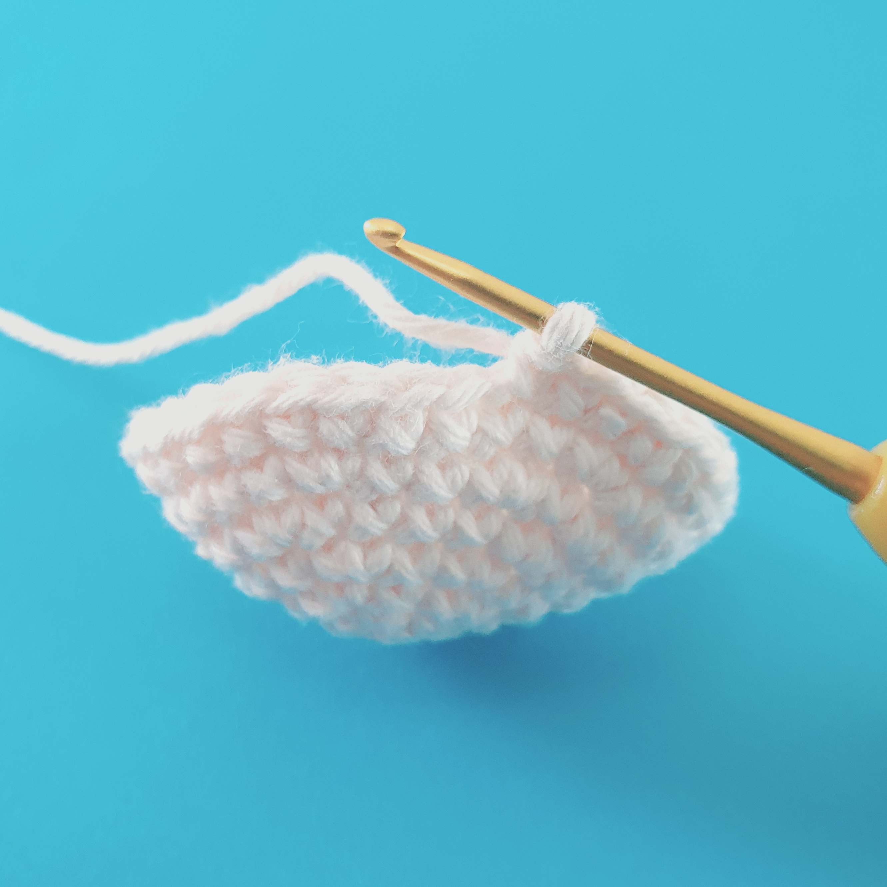

How lucky are you to have ended up here. These are the exact techniques I have discovered that give your amigurumis that crisp, well defined finish. I have created some photo tutorials below for you to follow below.
This decrease is much more discreet than a regular decrease which is perfect for keeping shapes like the head smooth and even. It also helps to eliminate small gaps that are sometimes left by a regular decrease.
